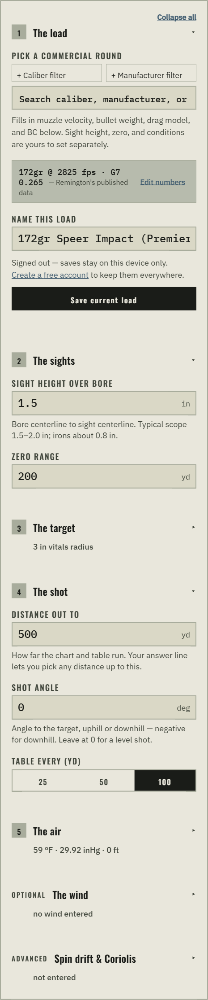
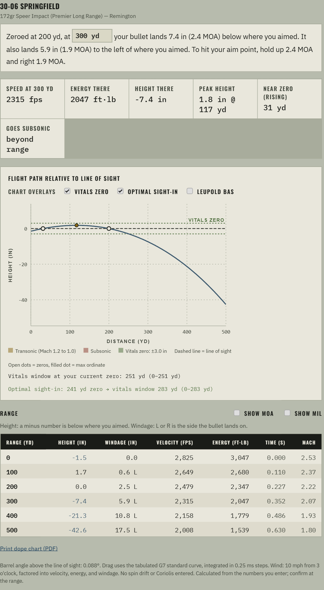
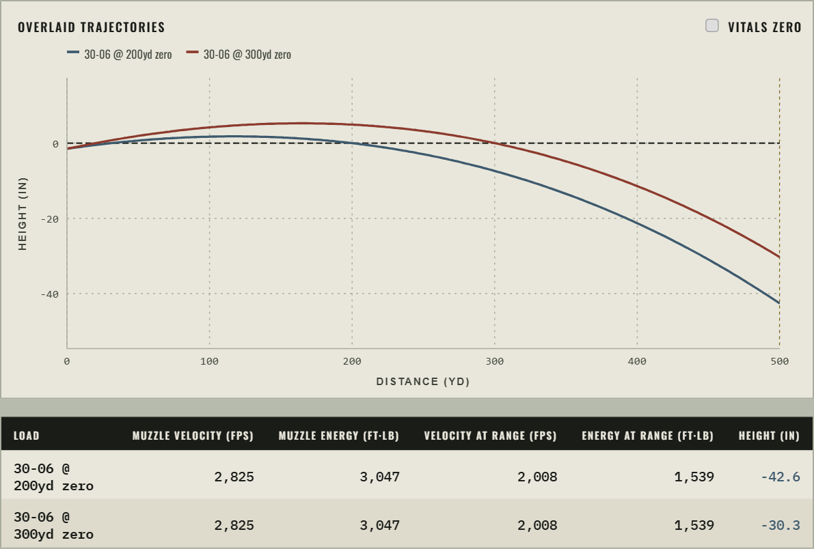
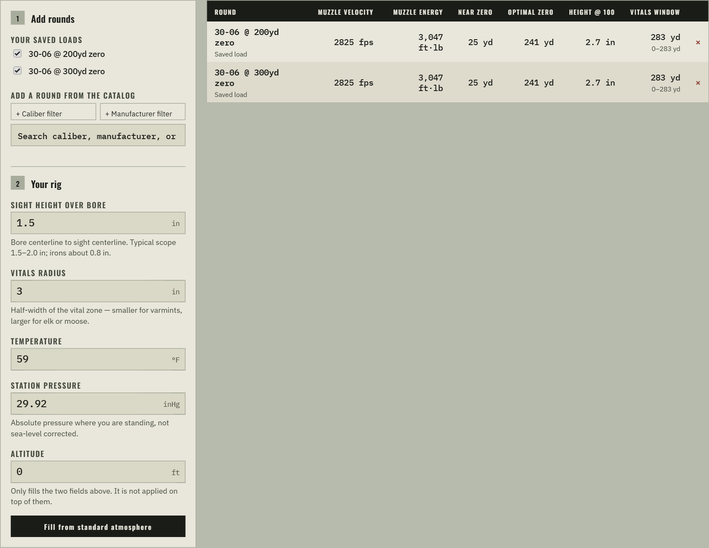
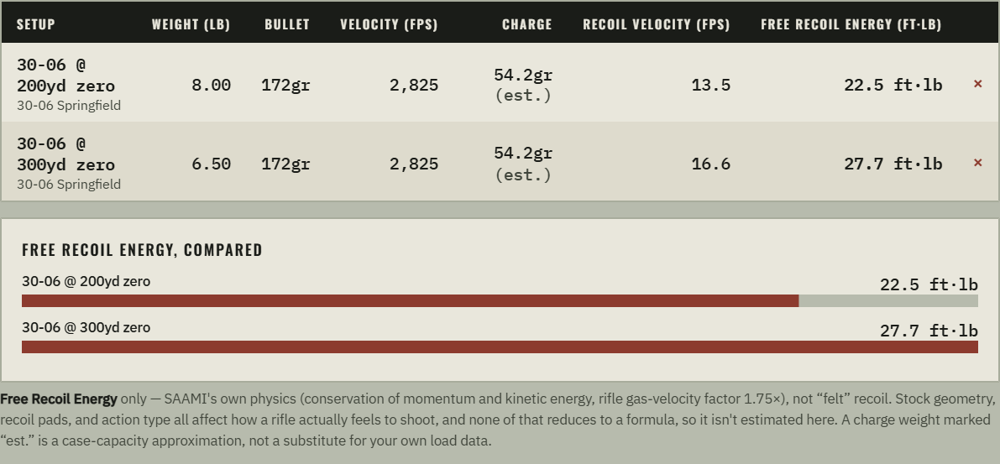
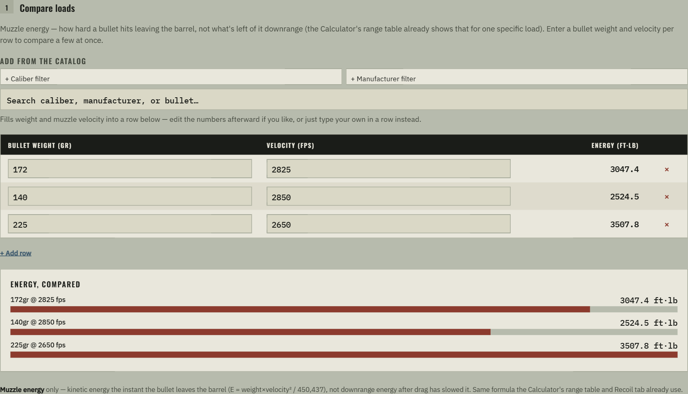
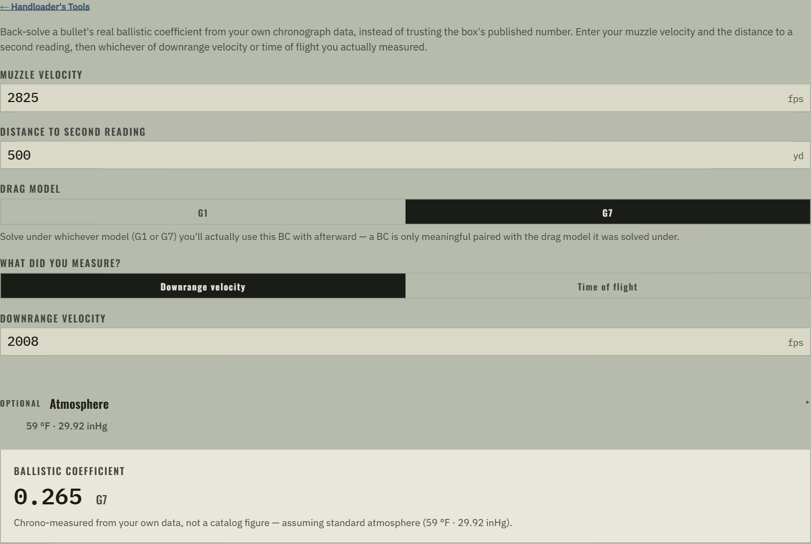

A free point-mass ballistics calculator: zero your rifle, chart the real drop, compare loads side by side, and find exactly how far you can hold dead-on. This guide walks the form, decodes the jargon, and flags the handful of places people get tripped up.
Open Ballistic Nerd →The Calculator tab opens on an example 30-06 load, so you're looking at a real answer before you type anything. To get your answer: pick your ammo, check your zero, then read the sentence at the top of the results. Four moves:
Search the catalog by caliber, manufacturer, or bullet name — or narrow first with the optional Caliber/Manufacturer filter chips — to pull real muzzle velocity, weight, and BC. Or type your own numbers for a handload. A catalog pick locks into one summary line ("172gr @ 2825 fps · G7 0.265") with an "Edit numbers" link if you need to change it.
Sight height over bore and zero range (both under "The sights," open from the start) describe your rifle — the catalog can't fill these in for you. Your target's vitals radius lives just below, folded until you want it.
A plain-English line leads the results: "Zeroed at 200 yd, at 300 yd your bullet lands 7.4 in (2.4 MOA) below where you aimed… To hit your aim point, hold up 2.4 MOA." Pick any distance from its dropdown. The speed, energy, and height tiles under it, the chart, and the table all follow.
The name field suggests one for you (from the catalog pick, or from grains/velocity/BC for a custom load) — keep it or rename it. After you save, a "✓ Saved" line tells you where it went: "Or open one of your saved loads," also used by Compare and Optimal Zero, so you never retype the same load twice.
On your very first visit a short "New here?" note repeats that path; tap "Got it" and it doesn't come back.

One tab per question. Nothing here is sequential — jump straight to whichever answers what you actually walked in asking.
The main tool — one load, one full trajectory, zeroed at a distance you choose.
Overlays two or more saved loads on one chart and one table, so different rounds or rifles actually stack up against each other.
For a whole list of rounds at once, finds the zero that keeps you inside the vitals for the longest possible stretch.
Compares Free Recoil Energy across rifle-and-cartridge setups, straight from SAAMI's own published formula.
A quick multi-row muzzle-energy comparison — weight and velocity in, energy out, nothing saved.
A hub, not a single tool — kept off the main tab bar so it doesn't crowd things for everyone else. Opening it always lands on a card grid; today that grid holds one card.
In-app how-tos, an FAQ, and a direct line to send an idea or report something wrong.
Real state pulled straight from the live app — not mockups.






Every chart in the app draws the same convention, so once you can read one you can read all of them.
Above the chart, the answer line says in one sentence where your bullet lands at the distance you pick and what to hold to hit your aim point — in MOA by default (MIL in Metric, or if only MIL is ticked). On a steep shot (5° or more, up or down) it says those numbers are for a level shot and gives the distance to hold for instead.
The range table underneath lists height, then a windage column once wind, spin drift, or Coriolis is actually in effect — the footnote below the chart always says which of the three, if any, are on — then velocity, energy, time, and Mach at every step distance you set. A legend line under the "Range" heading spells out the signs: a minus height is below where you aimed, and an L or R windage is the side the bullet lands on. Turn on the MOA / MIL columns to get holdover in scope-click units instead of inches — each appears right beside the height or windage it converts. Print dope chart opens your browser's print dialog with a clean printable card — pick "Save as PDF" as the destination to keep one in your range bag.
| BC | Ballistic coefficient — how well a bullet resists drag. Higher means it sheds velocity more slowly downrange. |
| G1 / G7 | Two different reference drag shapes a BC can be measured against. G1 fits older flat-base bullets; G7 fits modern boat-tails more accurately. A BC has to be paired with the model it was published under — mixing them isn't a small error, it's the wrong calculation. |
| Muzzle velocity | Bullet speed the instant it leaves the barrel, in fps (or m/s in Metric). |
| Sight height | Distance from bore centerline to scope (or iron sight) centerline — typically 1.5–2.0in for a scope, about 0.8in for irons. |
| Zero | The distance where your point of impact crosses your line of sight. A trajectory usually has two: a near zero (rising) and a far zero (falling back through). |
| Max ordinate | The highest point the bullet reaches above your line of sight — the top of the arc. The results tile calls it "Peak height." |
| Hold / holdover | Aiming off on purpose to cancel drop or wind: "hold up 2.4 MOA and right 1.9 MOA" means aim that far above and to the right of where you want to hit. The answer line at the top of the Calculator's results works it out for you — the opposite direction from where the bullet lands. |
| Vitals radius / window | Radius is the half-width of the vital zone you're trying to stay inside (smaller for varmints, bigger for elk or moose). The window is how far out you can hold dead-on and still land inside it, given your current zero. |
| Optimal zero | The zero distance that makes the vitals window as long as possible — the ballistics-nerd version of "how far can I just hold center." |
| MOA / MIL | Angular units scopes dial in. 1 MOA ≈ 1.047in per 100yd; 1 MIL = 3.6in per 100yd. Letting the table show holdover in these instead of raw inches matches what's printed on your turret. The answer line quotes your hold in MOA by default, in MIL if you're in Metric or only MIL is ticked. |
| Transonic / subsonic | Transonic is the messy zone around Mach 1.2–1.0, where drag behavior gets less predictable as the bullet slows through the sound barrier. Subsonic is everything past Mach 1.0. |
| Station pressure | The actual, un-adjusted air pressure where you're standing — not the sea-level-corrected number a weather report usually gives you. |
| Shot angle | Steep uphill or downhill shots carry less effective drop than the slant range suggests. On a steep shot the answer line says its numbers are for a level shot and names the shorter distance to hold for instead (the "rifleman's rule"). |
| Twist rate | How fast your barrel's rifling spins the bullet, e.g. "1 turn in 8in." Needed, along with bullet length and diameter, to turn on spin drift — leave any one of the three blank and spin drift stays off. |
| Spin drift | A sideways drift from the bullet's own gyroscopic spin, always toward the direction of the rifling twist. A standard closed-form approximation layered on the trajectory, not a full 3D solve — opt in under Calculator's "Advanced" section. |
| Coriolis effect | A sideways (and slight vertical) drift from the earth's own rotation under the bullet during its time of flight — needs only your latitude to turn on, under Calculator's "Advanced" section. Matters far more at long range than short. |
| Free recoil energy | Exact physics — conservation of momentum and kinetic energy, from SAAMI's own published formula. Not the same as how a rifle feels to shoot, which also depends on stock, pad, and muzzle device. |
| Derived BC | A load's own manufacturer didn't publish a BC, so one was back-solved from that manufacturer's own published downrange velocity numbers. Grounded in real data, but an approximation — always labeled, never presented as an official figure. |
| Chrono-measured BC | A BC solved from your own chronograph data (Handloader's Tools → BC from Chronograph) — same root-finding method as a Derived BC, but deliberately labeled differently, since it's the opposite situation: your own real rifle and ammo, not the app's approximation for a manufacturer who published nothing. Arguably higher confidence than a catalog figure, not lower. |
Every saved load and your shared rig live only in this browser's local storage. Nothing is uploaded anywhere. Convenient and completely private — but tied to this one browser on this one device.
An email + password account (confirm the email link to activate) syncs your saved loads and rig to the cloud, so the same setups follow you to another device or browser. Nothing beyond those two things is ever collected.
Because that's what you actually aim with and read on a reticle. The bullet starts one sight height below your line of sight, rises through it at the near zero, and falls back through it at the far zero — matching what you'd see at the range.
Yes — the Imperial/Metric toggle at the top applies everywhere. Everything is computed internally in imperial units and converted only for display and input, so switching back and forth never loses precision. In Metric the answer line quotes your hold in MIL rather than MOA.
Manufacturers don't publish it for factory ammo. When a cartridge has known case capacity, the estimate comes from published case-capacity figures at a conservative ~90% load density — always labeled as an estimate, always overridable if you know your real charge weight.
No. It's exact physics — conservation of momentum and kinetic energy, straight from SAAMI's published formula. What a rifle actually feels like also depends on stock geometry, recoil pads, and muzzle devices, none of which reduce to one formula — so "felt" recoil is deliberately not estimated.
Both are standard closed-form approximations layered on top of the trajectory — not a full 3D solve of the bullet's spin or the earth's rotation, the same kind of established formula every serious ballistics calculator uses. Spin drift needs twist rate, bullet length, and bullet diameter (all three, or it stays off); Coriolis needs only your latitude. Both live under Calculator's "Advanced" section, collapsed by default since most shots never need them — they mostly matter past a few hundred yards. Off by default, on only if you fill them in. Checked against the same independent reference solver the core trajectory is (see below) — worst-case deviation is within 0.01in, tighter than the core trajectory's own 0.15in figure.
No — deliberately different words for opposite situations. "Derived BC" means a manufacturer never published a real figure, so this app approximated one from their other published data — lower confidence than a real published BC. A "chrono-measured" BC, from Handloader's Tools' BC from Chronograph, is empirical — solved from your own rifle, your own ammo, shot under your own conditions — arguably higher confidence than a generic catalog figure, not lower. Same root-finding method underneath either way, but the two labels intentionally don't share a word so they're never mistaken for each other.
Aerodynamic jump and powder-temperature sensitivity aren't in the solver yet. Spin drift and the Coriolis effect are, as of Calculator's "Advanced" section (see above). The core trajectory — drag, wind deflection, atmosphere — is a full point-mass integration, not a simplified approximation, and is checked against an independent solver: worst-case deviation is under 1 fps on velocity and 0.15in on height, out to 1000yd.
Clock face, relative to you: 12 is straight into your face, 3 is your right cheek, 6 is at your back, 9 is your left cheek. Wind only counts once both a speed and a direction are filled in — enter just one and a note under the fields (and in the footer) says so; leave both blank for a no-wind trajectory.